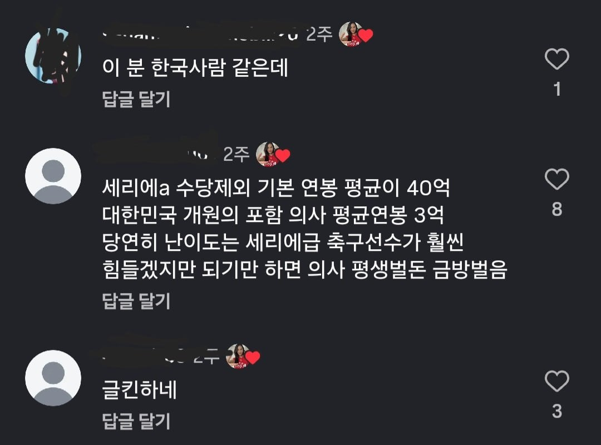
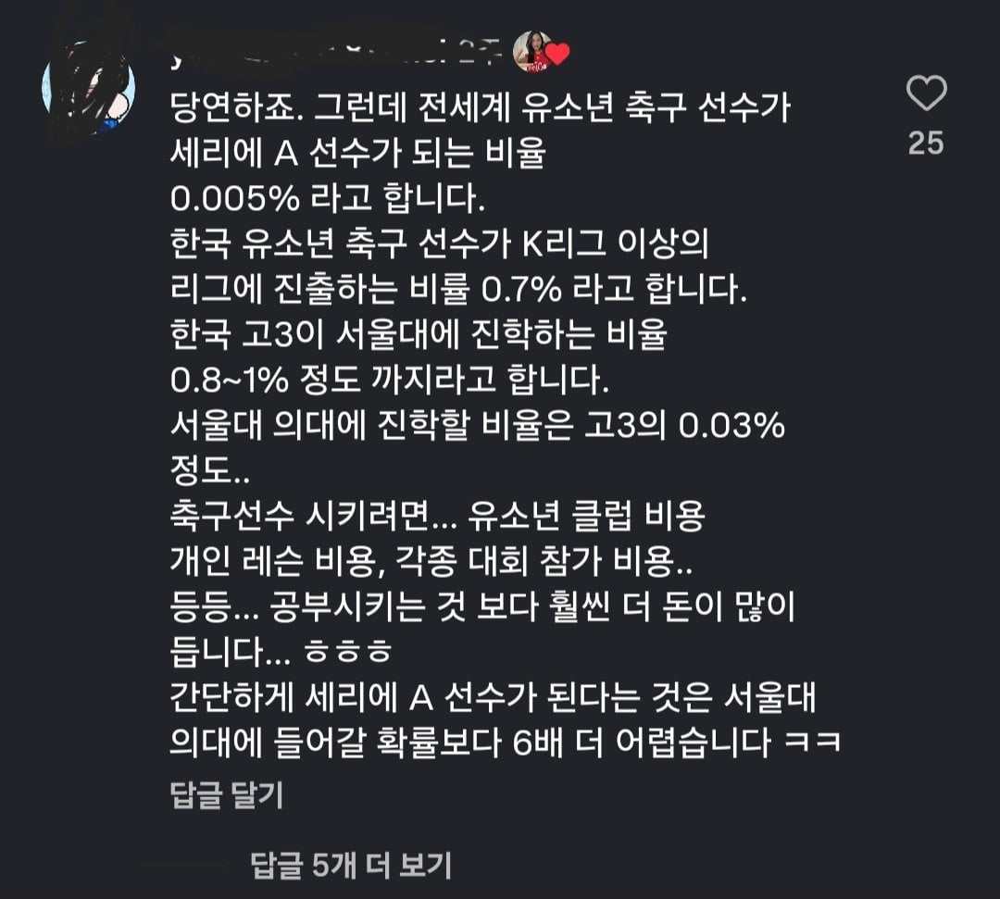

k리그 가는것도 ㅈㄴ 빡세지 않나..


k리그 가는것도 ㅈㄴ 빡세지 않나..
미국 뉴로서전급아이냐 시밯;; 병원에서 돈 존나 퍼줌
근데 요새 이탈리아 축구 선수들 중에 특출난 선수가 안보임
세계 5대 리그면 약 100개 팀에 주전 선수면 약 3000명 안에 드는건데 그게 쉽나...
축구 선수 한경기 한경기 뛰는거 존나 힘듦
비교할걸 비교해야지;
암만 예전만 못하다 해도 올림픽 금메달 월드컵 우승도 한 나라의 리그에 챔스도 들었으니 그냥 아이비리그 유학급 봐야?
말투가 그냥 한국인인데?
유소년때 유망주 소리듣던 선수들도 K리그1 1군 데뷔도 못하고 은퇴하는 사람들 수두룩함 K리그도 쉬운리그가 절대아님 K리그도 그런데 세리에 A는 뭐 로또지
설의가 아니라 존홉의여도 세리에aㅇㅇ
사람들 세리에 A가 좆으로보이나 미국에서 야구시켜서 메이저리그보낸다는급인데 ㅋㅋㅋㅋㅋㅋ
ㅋㅋㅋㅋㅋㅋㅋㅋㅋㅋㅋㅋ
저 확률을 따지는 후보군조차
유소년 축구선수는 축구를 좋아하거나 잘하는 아이들의 집합이면
수험생은 공부를 좋아하거나 잘하는 학생 뿐만 아니라 걍 학생 다 포함이잖아ㅋㅋㅋ
하지만 축구라고 해서 운동잘하는 애들 전체를 포함해서 순위 매기는건 아니지
운동 잘하면서 운동으로 안빠지는 경우도 많고.
설의 정도면 K1 주전보다 훨씬 힘들어. 애초에 진짜재능 있으면 유럽리그 j리그로 빠짐
저렇게 축구에 진심인 나라니까 월드컵은 피자 먹듯이 나가고 있겠죠?
이탈리아 여자 얼굴에 구수한 사투리가 ㅋㅋ
저게사투리임.?
나 부산사람임
사투리임
개원의로 좀 잘풀리면 연 수십억 개쒸움
그렇게 따지면 잘 풀린 선수는 연 수십억이 아니고 주급이 수십억인데....
의사는 몇명이나 저렇게 벌지…
축구선수로 잘풀리면 몇백억임
축구선수로 몇백억 벌기보다는 의사로 잘풀리기가 더 쉽지 않을ㅋ가
잘 풀린 선수는 40살 전에 수백억벌고 개원의로 잘 풀리려면 적어도 빅5에서 20년 가까이 굴러야 그렇게 벌 거 같은데 나이 차이가 심하지 않냐?
아녀… 그렇지만 않어 의사들이 진짜 가까운 사람 아니면 이야기 자체를 잘안해서 잘 모름
시험볼때 AI안경끼고 시험봐서 안걸리면 의대아님? 근데 세리에 a는 이런 방법도없으니 세리에a 가 개빡센게맞다
세리에 a면 서울대가 아니라 삼하랑 비교해야지
그래도 세리에지만ㅋㅋ
세리에 A면 이탈리아 리그인데
아무리 이전 명성에 비해 주춤하다고 하더라도 그들만의 리그임 ㅋㅋㅋㅋ
유럽쪽 축구 선수 인지도 생각하면 걍 슈퍼스타임 ㅋㅋ
경상도 사람이야
이태리 사람이야
나는 세리에a 축구선수선택. 세리에a면 슈퍼스타임;; 한국인이 세리에a 주전이면 개쩔게 살수있다..
예전 리그가 아님 1군 평균 주급 7천만원 정도 되는데 2군 3군들은 ?
생애소득 이랑 직업 안정성 생각해보면 서울대 의대 정도가 못비빌급 절대 아님
영상에서 세리에 A라고 했잖니
1부리그라구
세리아 에도 1군 2군 3군이 있겠죠잉?
그걸 세리에C에서 굴리는데요?
애초에 유럽축구팀의 2군개념은 아예 하위리그에서 운영하는 경우가 많고 세리에 같은 경우에는 운영하는 팀 조차 몇팀 안됨
모르면 쫌... A에다 등록한 2~3군백업선수를 말하는데 뭔 헛소리냐 넌 리그운영하는데 11명만으로 운영한다고 생각하냐
그건 백업선수지 2군 3군이라고 부르지는 않아요…
네가 말하고 싶은건 2옵션 3옵션 선수라고 부르지…
난 의대 택할듯
레이저만 쏘면 몇억이 들어오는 워라밸인데 안전성이나 몸 다칠일 없는거 생각하면
와..
여기 운동 안해본놈들 왤케많냐..
확률로 제시하는것도 맞는말인데 운동선수로 성공이 몇배는 더어려울꺼다..
국내 국대만 해도 피지컬+뇌지컬+절제력이 필요한데 나참.. 댓글보고 어이가 없구만..
날쌘돌이한정
너무 당연한 얘기 아닌가 ㅋㅋ 세리에b만 가도 의사보다 위일거 같은데
애 공부시켜서 의대보내는건 어느정도만 싹수있어도 웬만하면 가능은 함
근데 세리에A? 시발 축알못인 내가들어도 존나 허황된얘기임
고등학교때 같은반이었던 애가 축구부였는데 진짜 축구로 유명한 학교였지만 그중에서도 존나 부각된녀석이었음 유망주취급받고
걔 나중에 K리그가서 뛰었는데 국대는 못달고 지금 지도자하더라고
이런 축구유망주가 디글디글한 세리에A 유스를 뚫고 프로가 된다?
ㅋㅋㅋ... 천재는 헷갈리게 안한다는 소리가 있는데 그 헷갈리지 않는 천재들이나 하는거라고 봄
참고로 내가 나온 그 고등학교에선 의대는 20명씩보냈음
순당무 보는거같네
축군지 ㄷㄷ
세리에a랑 서울대의대 입학은 각 루트 안의 레벨이 안맞는거같음
유스 입단 정도가 맞지않을까
아니 세리에a면 걍 월클급 아냐?ㅋㅋㅋㅋㅋㅋ
그 고등학교에서 엘리트중에 엘리트들이 K리그데뷔한다던데
세리에 벨기에 실패한 이승우가 연봉만 15억받음 ㅋㅋㅋ
설대 의대가 더 낫다는 애들은 확실히 공부도 축구도 못했던건 알겠다 ㅋㅋㅋ
세리에 A 간다는건 의사로 비교해도 그냥 서울대 의사가 아니라 미국 유명 병원 의사로 취직하는 레벨 아님?
아무리 세리에 수준이 내려왔어도
전 세계 축구리그 중에 리그 top 5 안에 드는 수준인건데..